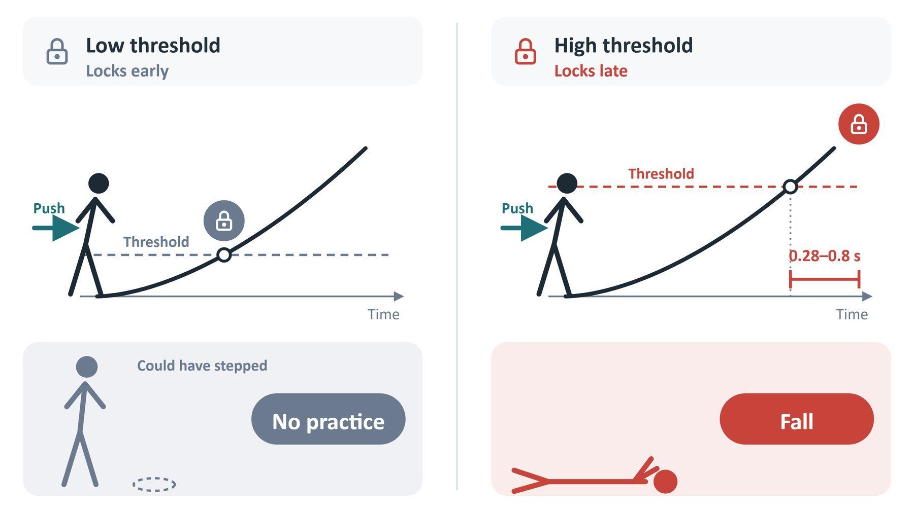
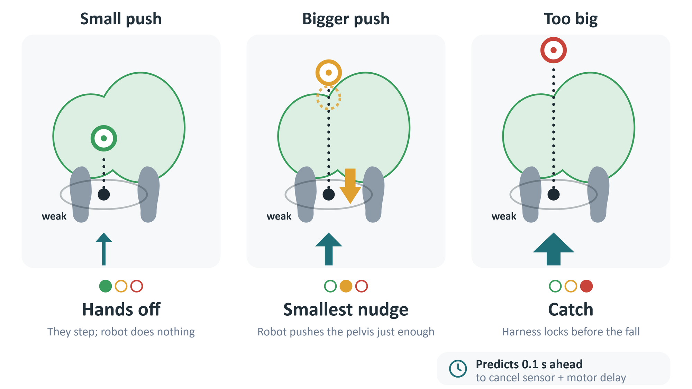
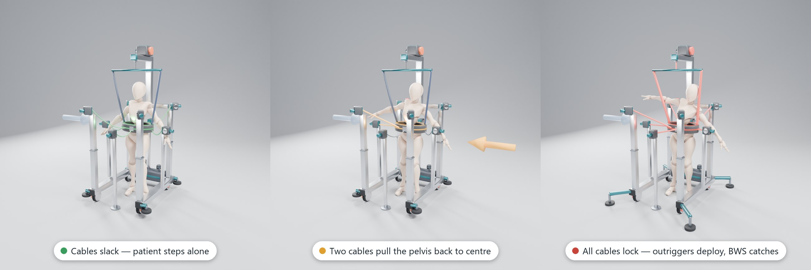
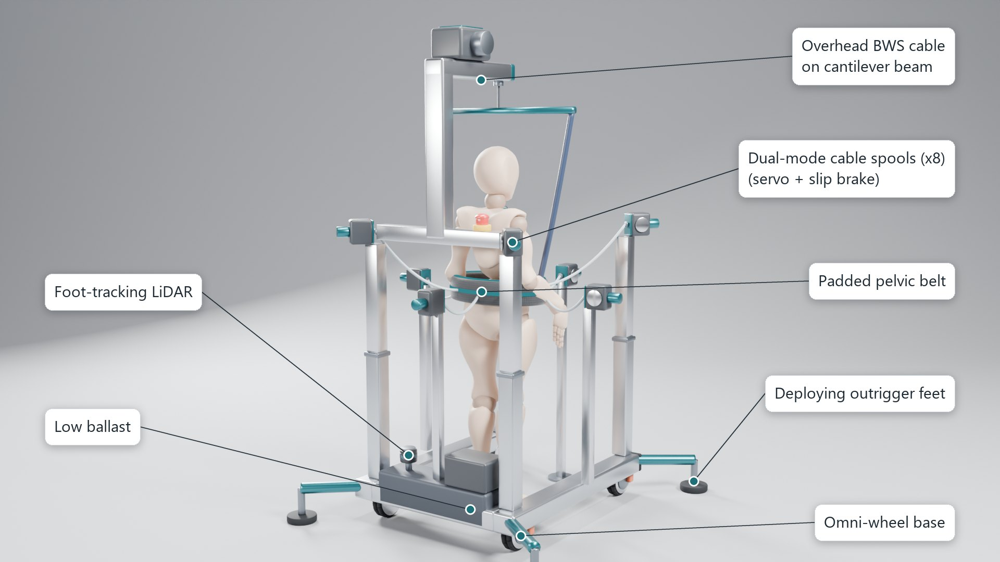

Let them step. Catch only when they can’t.
Concept render of design D3 (unbuilt, unvalidated). Blender; mannequin Mixamo/Adobe via three.js examples; HDRI Poly Haven (CC0).The skill that stops a fall is a quick recovery step. It has to be practised under a real loss of balance, which is dangerous, so therapists and robots tend to over-support.
of stroke patients still had impaired reactive stepping at discharge.
fell during inpatient stroke rehabilitation (20 of 136).
deaths from falls every year worldwide.

Ask “can they still save themselves?” — not “have they started to fall?” The target is the capture point; the green area is where this patient’s own step can reach. Inside it: hands off. Outside: the smallest nudge. Out of reach: catch.


All clips are simulations. The physics demo uses a robot walking policy with a simulated weak leg — a demonstration of the control idea, not patient evidence.
Loading videos…
Monte Carlo study: each bar is one controller on the same 2000 simulated pushes (seed 5412).
Capture-point threshold: similar solo recoveries (31.8%) but harness in 63.7% vs 40.7%. 95% CIs up to ±3 pp. Simplified model, not clinical data. Selected operating points: threshold lock 0.05 m, capture-point 0.08 m, spring K = 200 N/m, CatchPoint margin 0.03.
Impaired Unitree G1 policy (right-leg torque ×0.5, 60 ms delay) and 56 deterministic weak-side lateral pushes (7 magnitudes × 8 push times).
This demonstrates a simulated control trade-off. CatchPoint’s recoverability region and escalation were calibrated on the same push grid, so it is not a held-out performance test. Robot-policy demonstration only — not patient evidence or clinical validation.
Design D3: eight cables from a walker to a pelvic belt — slack, graded nudge, or passive slip-brake catch.

Passive slip brakes (corner 150, lateral 155, centre 120 N) give >= 300 N along the fall direction and <= 380 N horizontal resultant; the perpendicular component is up to 178 N. The walker slides at 465 N (259 N if mu = 0.3). The catch engages in 814 of 2000 trials; falls 95/2000 (4.75%) become at worst 104/2000 (5.2%): a small increase, so never claim fall reduction. Source: results/sizing_D3_summary.md.
Runs entirely in your browser. Pick a push and a controller and watch hands-off, nudge and catch decisions.
How a team of five could split the project (22 Oct – 3 Nov 2026): clinical, mechanical, sensing, control, simulation.
Public version: one third-party product photo (slide 3) is omitted.